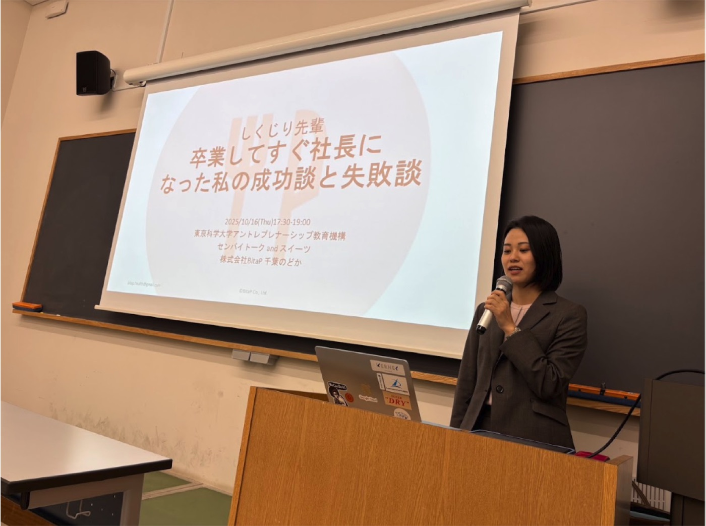
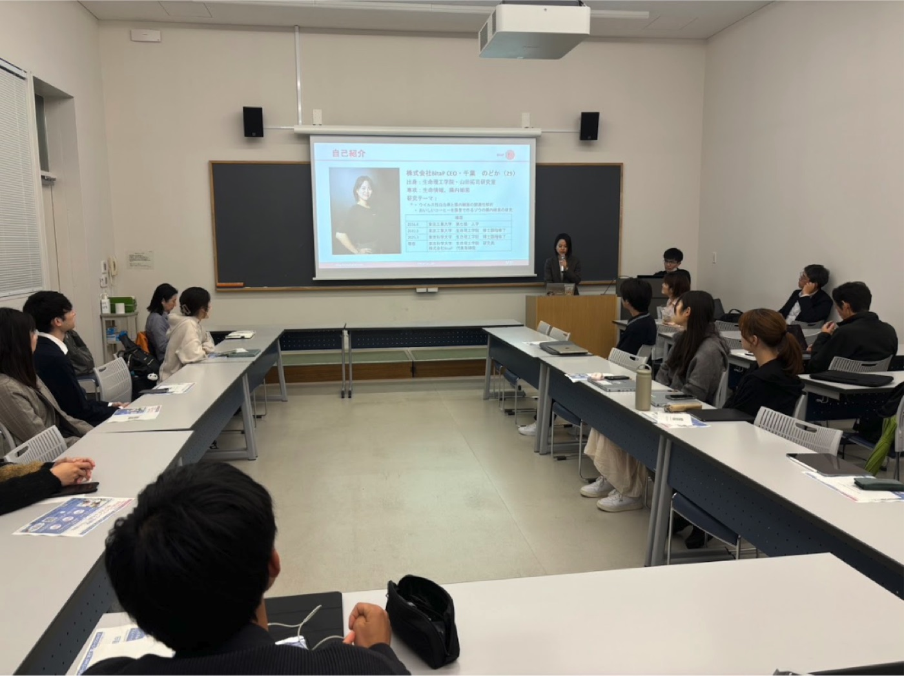

2025/10/16
【登壇情報】東京科学大学のアントレプレナーシップのイベントに登壇しました
2025年10月16日、代表の千葉のどかが母校・東京科学大学 大岡山キャンパスにて開催された「アントレセンパイトーク and スィーツ」（主催：アントレプレナーシップ教育機構）に登壇しました。
当日は「しくじり先輩 〜卒業してすぐ社長になった私の成功談と失敗談〜」と題して、腸内細菌研究と栄養学の知見をもとに立ち上げた株式会社BitaPの設立経緯や、起業初期の挑戦・学びについてお話ししました。同大学の出身研究室での研究経験が、どのように事業アイデアの源泉となったのかも紹介しました。
１０件以上の事前の質問のほか、当日も活発に質問を寄せていただき、研究成果を社会に還元する「研究者発スタートアップ」の可能性について意見交換がなされました。講演終了後には、「自分が腸活で事業を起こすならどんなアプローチをとるか」をテーマに、出席した学生が研究成果の社会実装やキャリアに関する考えを深めているようでした。
BitaPでは今後も、科学と社会をつなぐアントレプレナーシップ活動に積極的に取り組んでまいります。
（講演の様子は以下の写真をご覧ください）

